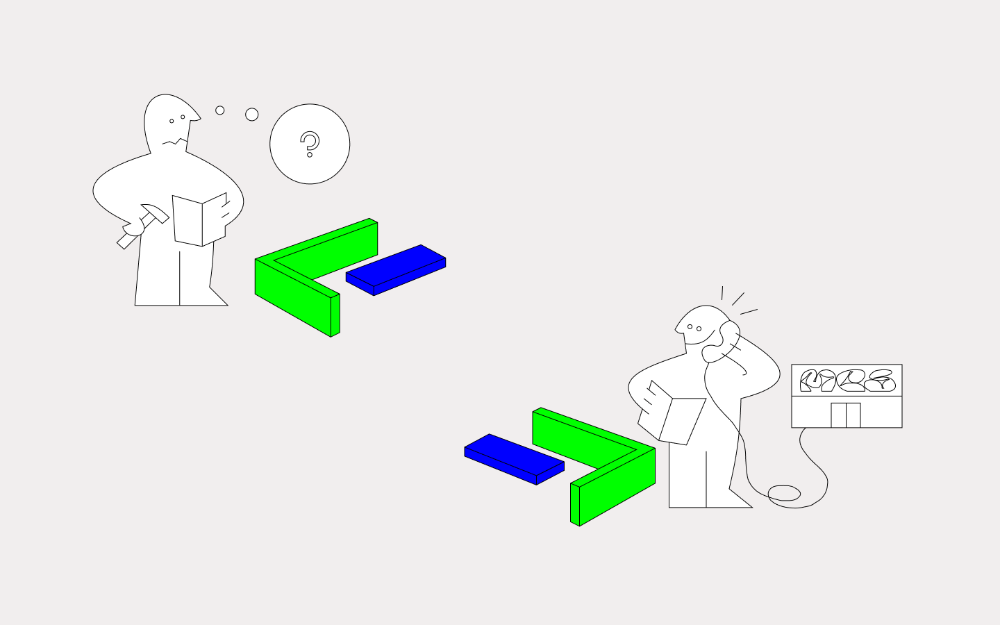
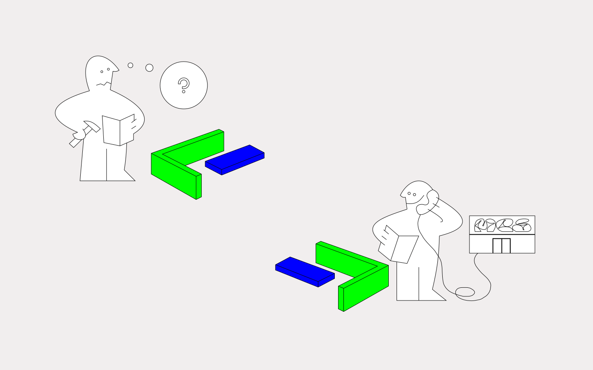

Эта страница про самые популярные форматы изображений, но тут также можно найти ссылки и полезные бонусы .
JPG отлично подходят для фото.

GIF подходит для анимации.
PNG – для диаграмм и иконок.

Старайтесь использовать SVG, когда для этого есть возможность.
